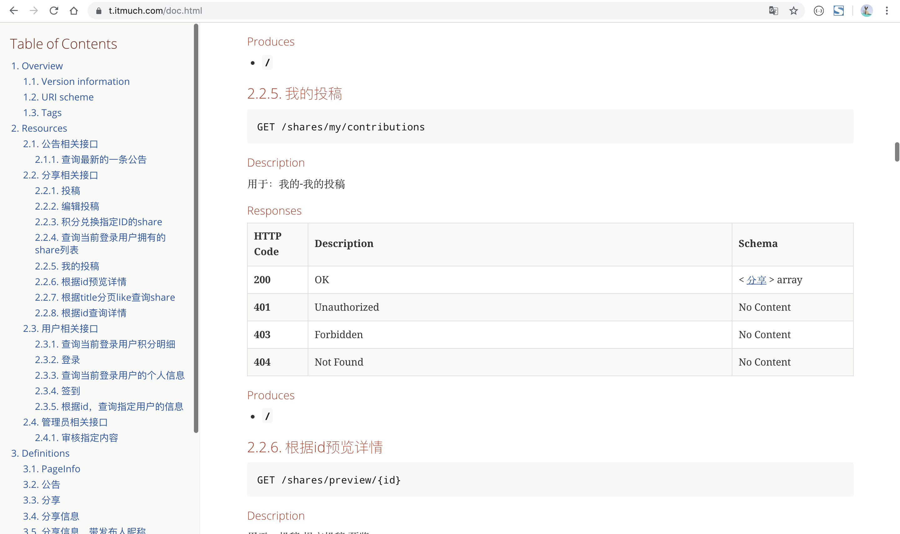

<!DOCTYPE HTML>
<html lang="zh-CN">
<head><meta name="generator" content="Hexo 3.8.0">
    <!--Setting-->
    <meta charset="UTF-8">
    <meta name="viewport" content="width=device-width, user-scalable=no, initial-scale=1.0, maximum-scale=1.0, minimum-scale=1.0">
    <meta http-equiv="X-UA-Compatible" content="IE=Edge,chrome=1">
    <meta http-equiv="Cache-Control" content="no-siteapp">
    <meta http-equiv="Cache-Control" content="no-transform">
    <meta http-equiv="pragma" content="no-cache">
    <meta http-equiv="Cache-Control" content="no-cache, must-revalidate">
    <meta http-equiv="expires" content="Mon Apr 06 2020 02:12:38 GMT+0800 (CST)">
    <meta name="renderer" content="webkit|ie-comp|ie-stand">
    <meta name="apple-mobile-web-app-capable" content="周立的博客 - 关注Spring Cloud、Docker">
    <meta name="apple-mobile-web-app-status-bar-style" content="black">
    <meta name="format-detection" content="telephone=no,email=no,adress=no">
    <meta name="browsermode" content="application">
    <meta name="screen-orientation" content="portrait">
    <meta name="theme-version" content="1.2.3">
    <meta name="root" content="/">
    
    <!--SEO-->

    <meta name="keywords" content="工作,Swagger">


    <meta name="description" content="最近经常被问 https://t.itmuch.com/doc.html 文档页是怎么制作的，考虑到步骤略复杂，写篇手记总结下吧。

TIPS
 https://t.itmuch.com/doc.html 是个人在慕课网视频《 面向未来微服务:Spring Cloud Alibaba从入门到进...">


<meta name="robots" content="all">
<meta name="google" content="all">
<meta name="googlebot" content="all">
<meta name="verify" content="all">
    <!--Title-->


<title>分享：如何生成漂亮的静态文档说明页 | 周立的博客 - 关注Spring Cloud、Docker</title>


    <link rel="alternate" href="../../atom.html" title="周立的博客 - 关注Spring Cloud、Docker" type="application/atom+xml">


    

    


<link rel="stylesheet" href="../../static/css/bootstrap.min-271a649e0635d6fa1b.css">
<link rel="stylesheet" href="../../static/css/font-awesome.min-ac2bebcf7fb5b26.css">
<link rel="stylesheet" href="../../static/css/style-6f3c140f6eee20e6591da00ec0.css">


    


    <script>
        var _hmt = _hmt || [];
        (function() {
            var hm = document.createElement("script");
            hm.src = "https://hm.baidu.com/hm.js?13766878cde148282622871dd245a973";
            var s = document.getElementsByTagName("script")[0];
            s.parentNode.insertBefore(hm, s);
        })();
    </script>


    

</head>

</html>
<!--[if lte IE 8]>
<style>
    html{ font-size: 1em }
</style>
<![endif]-->
<!--[if lte IE 9]>
<div style="ie">你使用的浏览器版本过低，为了你更好的阅读体验，请更新浏览器的版本或者使用其他现代浏览器，比如Chrome、Firefox、Safari等。</div>
<![endif]-->

<body>
    
    <nav class="main-navigation">
    <div class="container">
        <div class="row clearfix">
            <div class="col-md-12 column">
                <nav class="navbar navbar-default" style="background-color:#fff;border:0;margin-bottom:0" role="navigation">
                    <div class="navbar-header">
                        <button type="button" class="navbar-toggle" data-toggle="collapse" data-target="#navbar-collapse-1">
                            <span class="sr-only">切</span>
                            <span class="icon-bar"></span>
                            <span class="icon-bar"></span>
                            <span class="icon-bar"></span>
                        </button>
                        <a class="logo" href="../../index.html">
                            周立的博客
                        </a>
                    </div>

                    <div class="collapse navbar-collapse" style="border:0;" id="navbar-collapse-1">
                        <ul class="nav navbar-nav">
                            
                                
                                    <li>
                                        <a href="../../about.html" target="_blank">
                                            <i class="fa fa-user"></i>
                                            关于我
                                        </a>
                                    </li>
                                
                            
                                
                                    <li>
                                        <a href="../../archives.html" target="_blank">
                                            <i class="fa fa-archive"></i>
                                            归档
                                        </a>
                                    </li>
                                
                            
                                
                                    <li class="dropdown">
                                        <a href="#" class="dropdown-toggle" data-toggle="dropdown" data-hover="dropdown">
                                            <i class="fa fa-fire"></i>
                                            系列课程
                                            <strong class="caret"></strong>
                                        </a>
                                        <ul class="dropdown-menu">
                                            
                                                <li>
                                                    <a href="../../docker/00-docker-lession-index.html" target="_blank">
                                                        <i class="fa "></i>
                                                        Docker系列教程
                                                    </a>
                                                </li>
                                            
                                                <li>
                                                    <a href="../../spring-cloud/spring-cloud-index.html" target="_blank">
                                                        <i class="fa "></i>
                                                        Spring Cloud系列教程
                                                    </a>
                                                </li>
                                            
                                                <li>
                                                    <a href="../../spring-boot/spring-boot-index.html" target="_blank">
                                                        <i class="fa "></i>
                                                        Spring Boot系列教程
                                                    </a>
                                                </li>
                                            
                                        </ul>
                                    </li>
                                
                            
                                
                                    <li class="dropdown">
                                        <a href="#" class="dropdown-toggle" data-toggle="dropdown" data-hover="dropdown">
                                            <i class="fa fa-book"></i>
                                            开源书
                                            <strong class="caret"></strong>
                                        </a>
                                        <ul class="dropdown-menu">
                                            
                                                <li>
                                                    <a href="../../books/rocketmq.html" target="_blank">
                                                        <i class="fa fa-rocket"></i>
                                                        RocketMQ开发者指南
                                                    </a>
                                                </li>
                                            
                                                <li>
                                                    <a href="../../books/skywalking.html" target="_blank">
                                                        <i class="fa fa-skyatlas"></i>
                                                        Skywalking 6.2.0中文文档
                                                    </a>
                                                </li>
                                            
                                        </ul>
                                    </li>
                                
                            
                                
                                    <li class="dropdown">
                                        <a href="#" class="dropdown-toggle" data-toggle="dropdown" data-hover="dropdown">
                                            <i class="fa fa-cog"></i>
                                            工具
                                            <strong class="caret"></strong>
                                        </a>
                                        <ul class="dropdown-menu">
                                            
                                                <li>
                                                    <a href="../../tools/markdown2.html" target="_blank">
                                                        <i class="fa "></i>
                                                        微信排版工具2.0
                                                    </a>
                                                </li>
                                            
                                        </ul>
                                    </li>
                                
                            
                        </ul>
                        
                            <form id="search-form" class="navbar-form navbar-right">
                                <div class="form-group input-group">
                                    <input type="text" id="local-search-input" class="form-control" placeholder="搜我...">
                                    <span class="input-group-btn">
                                        <a class="btn btn-default">
                                            <i class="fa fa-search"></i>
                                        </a>
                                    </span>
                                </div>
                                <div id="local-search-result" class="local-search-result-cls"></div>
                            </form>
                        
                    </div>
                </nav>
            </div>
        </div>
    </div>
</nav>

    <a href="javascript:;" target="_blank">
        
    </a>


    <section class="content-wrap">
        <div class="container">
            <div class="row">
                <main class="col-md-8 main-content m-post">
                    

<p id="process"></p>
<article class="post">
    <div class="post-head">
        <h1 id="分享：如何生成漂亮的静态文档说明页">
            
                分享：如何生成漂亮的静态文档说明页
            
        </h1>
        <div class="post-meta">
    
        <span class="categories-meta fa-wrap">
            <i class="fa fa-folder-open-o"></i>
            <a class="category-link" href="../../categories/其他/index.html">其他</a>
        </span>
    

    
        <span class="fa-wrap">
            <i class="fa fa-tags"></i>
            <span class="tags-meta">
                
                    <a class="tag-link" href="javascript:;">Swagger</a> <a class="tag-link" href="../../tags/工作/index.html">工作</a>
                
            </span>
        </span>
    

    
        
        <span class="fa-wrap">
            <i class="fa fa-clock-o"></i>
            <span class="date-meta">2019/08/26</span>
        </span>
        
            <span class="fa-wrap">
                <i class="fa fa-eye"></i>
                <span id="busuanzi_value_page_pv"></span>
            </span>
        
    
</div>
        
        
    </div>
    
    <div class="post-body post-content" id="post-content">
        
    <div class="toc-article">
        <strong>
            目录
        </strong>
        <div class="toc-content">
            <ol class="toc"><li class="toc-item toc-level-2"><a class="toc-link" href="#效果"><span class="toc-text">效果</span></a></li><li class="toc-item toc-level-2"><a class="toc-link" href="#总体步骤"><span class="toc-text">总体步骤</span></a></li><li class="toc-item toc-level-2"><a class="toc-link" href="#整合Swagger"><span class="toc-text">整合Swagger</span></a></li><li class="toc-item toc-level-2"><a class="toc-link" href="#生成ASCIIDOC"><span class="toc-text">生成ASCIIDOC</span></a></li><li class="toc-item toc-level-2"><a class="toc-link" href="#生成HTML"><span class="toc-text">生成HTML</span></a></li><li class="toc-item toc-level-2"><a class="toc-link" href="#使用"><span class="toc-text">使用</span></a></li></ol>
        </div>
    </div>


        <p>最近经常被问 <a href="../../doc.html" target="_blank" rel="noopener">https://t.itmuch.com/doc.html</a> 文档页是怎么制作的，考虑到步骤略复杂，写篇手记总结下吧。</p>
<blockquote>
<p><strong>TIPS</strong></p>
<p> <a href="../../doc.html" target="_blank" rel="noopener">https://t.itmuch.com/doc.html</a> 是个人在慕课网视频《 <a href="javascript:;" target="_blank" rel="noopener">面向未来微服务:Spring Cloud Alibaba从入门到进阶</a> 》的实战项目配套文档。</p>
</blockquote>
<h2 id="效果"><a href="#效果" class="headerlink" title="效果"></a>效果</h2><p></p>
<h2 id="总体步骤"><a href="#总体步骤" class="headerlink" title="总体步骤"></a>总体步骤</h2><ul>
<li>整合Swagger，生成Swagger描述端点 <code>/v2/api-docs</code> </li>
<li>使用 <code>swagger2markup-maven-plugin</code> ，将 <code>/v2/api-docs</code> 生成ASCIIDOC文件；</li>
<li>使用 <code>asciidoctor-maven-plugin</code> ，将ASCIIDOC文件转换成HTML；</li>
<li>部署</li>
</ul>
<h2 id="整合Swagger"><a href="#整合Swagger" class="headerlink" title="整合Swagger"></a>整合Swagger</h2><blockquote>
<p><strong>TIPS</strong></p>
<p>Swagger的使用非常简单，本文不展开探讨了，各位看官自行百度一下用法吧。</p>
<p>常用注解：</p>
<ul>
<li>@Api</li>
<li>@ApiOperation</li>
<li>@ApiModel</li>
<li>@ApiModelProperty</li>
</ul>
</blockquote>
<ul>
<li><p>加依赖</p>
<figure class="highlight xml"><table><tr><td class="gutter"><pre><span class="line">1</span><br><span class="line">2</span><br><span class="line">3</span><br><span class="line">4</span><br><span class="line">5</span><br><span class="line">6</span><br><span class="line">7</span><br><span class="line">8</span><br><span class="line">9</span><br><span class="line">10</span><br><span class="line">11</span><br><span class="line">12</span><br><span class="line">13</span><br><span class="line">14</span><br><span class="line">15</span><br><span class="line">16</span><br><span class="line">17</span><br><span class="line">18</span><br><span class="line">19</span><br><span class="line">20</span><br><span class="line">21</span><br><span class="line">22</span><br><span class="line">23</span><br><span class="line">24</span><br><span class="line">25</span><br><span class="line">26</span><br><span class="line">27</span><br><span class="line">28</span><br><span class="line">29</span><br><span class="line">30</span><br><span class="line">31</span><br><span class="line">32</span><br><span class="line">33</span><br></pre></td><td class="code"><pre><span class="line"><span class="comment">&lt;!-- swagger --&gt;</span></span><br><span class="line"><span class="comment">&lt;!-- 之所以要排除，是因为如果不排除会报NumberFormatException的警告。 --&gt;</span></span><br><span class="line"><span class="comment">&lt;!-- 参考：https://github.com/springfox/springfox/issues/2265--&gt;</span></span><br><span class="line"><span class="tag">&lt;<span class="name">dependency</span>&gt;</span></span><br><span class="line">  <span class="tag">&lt;<span class="name">groupId</span>&gt;</span>io.springfox<span class="tag">&lt;/<span class="name">groupId</span>&gt;</span></span><br><span class="line">  <span class="tag">&lt;<span class="name">artifactId</span>&gt;</span>springfox-swagger2<span class="tag">&lt;/<span class="name">artifactId</span>&gt;</span></span><br><span class="line">  <span class="tag">&lt;<span class="name">version</span>&gt;</span>2.9.2<span class="tag">&lt;/<span class="name">version</span>&gt;</span></span><br><span class="line">  <span class="tag">&lt;<span class="name">exclusions</span>&gt;</span></span><br><span class="line">    <span class="tag">&lt;<span class="name">exclusion</span>&gt;</span></span><br><span class="line">      <span class="tag">&lt;<span class="name">groupId</span>&gt;</span>io.swagger<span class="tag">&lt;/<span class="name">groupId</span>&gt;</span></span><br><span class="line">      <span class="tag">&lt;<span class="name">artifactId</span>&gt;</span>swagger-annotations<span class="tag">&lt;/<span class="name">artifactId</span>&gt;</span></span><br><span class="line">    <span class="tag">&lt;/<span class="name">exclusion</span>&gt;</span></span><br><span class="line">    <span class="tag">&lt;<span class="name">exclusion</span>&gt;</span></span><br><span class="line">      <span class="tag">&lt;<span class="name">groupId</span>&gt;</span>io.swagger<span class="tag">&lt;/<span class="name">groupId</span>&gt;</span></span><br><span class="line">      <span class="tag">&lt;<span class="name">artifactId</span>&gt;</span>swagger-models<span class="tag">&lt;/<span class="name">artifactId</span>&gt;</span></span><br><span class="line">    <span class="tag">&lt;/<span class="name">exclusion</span>&gt;</span></span><br><span class="line">  <span class="tag">&lt;/<span class="name">exclusions</span>&gt;</span></span><br><span class="line"><span class="tag">&lt;/<span class="name">dependency</span>&gt;</span></span><br><span class="line"><span class="tag">&lt;<span class="name">dependency</span>&gt;</span></span><br><span class="line">  <span class="tag">&lt;<span class="name">groupId</span>&gt;</span>io.springfox<span class="tag">&lt;/<span class="name">groupId</span>&gt;</span></span><br><span class="line">  <span class="tag">&lt;<span class="name">artifactId</span>&gt;</span>springfox-swagger-ui<span class="tag">&lt;/<span class="name">artifactId</span>&gt;</span></span><br><span class="line">  <span class="tag">&lt;<span class="name">version</span>&gt;</span>2.9.2<span class="tag">&lt;/<span class="name">version</span>&gt;</span></span><br><span class="line"><span class="tag">&lt;/<span class="name">dependency</span>&gt;</span></span><br><span class="line"><span class="tag">&lt;<span class="name">dependency</span>&gt;</span></span><br><span class="line">  <span class="tag">&lt;<span class="name">groupId</span>&gt;</span>io.swagger<span class="tag">&lt;/<span class="name">groupId</span>&gt;</span></span><br><span class="line">  <span class="tag">&lt;<span class="name">artifactId</span>&gt;</span>swagger-annotations<span class="tag">&lt;/<span class="name">artifactId</span>&gt;</span></span><br><span class="line">  <span class="tag">&lt;<span class="name">version</span>&gt;</span>1.5.21<span class="tag">&lt;/<span class="name">version</span>&gt;</span></span><br><span class="line"><span class="tag">&lt;/<span class="name">dependency</span>&gt;</span></span><br><span class="line"><span class="tag">&lt;<span class="name">dependency</span>&gt;</span></span><br><span class="line">  <span class="tag">&lt;<span class="name">groupId</span>&gt;</span>io.swagger<span class="tag">&lt;/<span class="name">groupId</span>&gt;</span></span><br><span class="line">  <span class="tag">&lt;<span class="name">artifactId</span>&gt;</span>swagger-models<span class="tag">&lt;/<span class="name">artifactId</span>&gt;</span></span><br><span class="line">  <span class="tag">&lt;<span class="name">version</span>&gt;</span>1.5.21<span class="tag">&lt;/<span class="name">version</span>&gt;</span></span><br><span class="line"><span class="tag">&lt;/<span class="name">dependency</span>&gt;</span></span><br></pre></td></tr></table></figure>
</li>
<li><p>配置Swagger（按照自己的需要配置，下面的配置代码仅供参考）</p>
<figure class="highlight java"><table><tr><td class="gutter"><pre><span class="line">1</span><br><span class="line">2</span><br><span class="line">3</span><br><span class="line">4</span><br><span class="line">5</span><br><span class="line">6</span><br><span class="line">7</span><br><span class="line">8</span><br><span class="line">9</span><br><span class="line">10</span><br><span class="line">11</span><br><span class="line">12</span><br><span class="line">13</span><br><span class="line">14</span><br><span class="line">15</span><br><span class="line">16</span><br><span class="line">17</span><br><span class="line">18</span><br><span class="line">19</span><br><span class="line">20</span><br><span class="line">21</span><br><span class="line">22</span><br><span class="line">23</span><br><span class="line">24</span><br><span class="line">25</span><br><span class="line">26</span><br><span class="line">27</span><br><span class="line">28</span><br><span class="line">29</span><br><span class="line">30</span><br><span class="line">31</span><br></pre></td><td class="code"><pre><span class="line"><span class="comment">/**</span></span><br><span class="line"><span class="comment"> * <span class="doctag">@author</span> itmuch.com</span></span><br><span class="line"><span class="comment"> */</span></span><br><span class="line"><span class="meta">@Configuration</span></span><br><span class="line"><span class="meta">@EnableSwagger</span>2</span><br><span class="line"><span class="keyword">public</span> <span class="class"><span class="keyword">class</span> <span class="title">SwaggerConfiguration</span> </span>&#123;</span><br><span class="line">    <span class="comment">/**</span></span><br><span class="line"><span class="comment">     * swagger 信息</span></span><br><span class="line"><span class="comment">     *</span></span><br><span class="line"><span class="comment">     * <span class="doctag">@return</span> 页面信息</span></span><br><span class="line"><span class="comment">     */</span></span><br><span class="line">    <span class="function"><span class="keyword">private</span> ApiInfo <span class="title">apiInfo</span><span class="params">()</span> </span>&#123;</span><br><span class="line">        <span class="keyword">return</span> <span class="keyword">new</span> ApiInfoBuilder()</span><br><span class="line">                .title(<span class="string">"ITMuch API"</span>)</span><br><span class="line">                .description(<span class="string">"ITMuch API"</span>)</span><br><span class="line">                .termsOfServiceUrl(<span class="string">""</span>)</span><br><span class="line">                .version(<span class="string">"1.0.0"</span>)</span><br><span class="line">                .contact(<span class="keyword">new</span> Contact(<span class="string">""</span>, <span class="string">""</span>, <span class="string">""</span>)).build();</span><br><span class="line">    &#125;</span><br><span class="line"></span><br><span class="line">    <span class="meta">@Bean</span></span><br><span class="line">    <span class="function"><span class="keyword">public</span> Docket <span class="title">customImplementation</span><span class="params">()</span> </span>&#123;</span><br><span class="line">        <span class="keyword">return</span> <span class="keyword">new</span> Docket(DocumentationType.SWAGGER_2)</span><br><span class="line">                .select()</span><br><span class="line">                .apis(RequestHandlerSelectors.basePackage(<span class="string">"com.itmuch"</span>))</span><br><span class="line">                .paths(PathSelectors.any())</span><br><span class="line">                .build()</span><br><span class="line">                .apiInfo(<span class="keyword">this</span>.apiInfo());</span><br><span class="line">                <span class="comment">//.globalOperationParameters(parameters);</span></span><br><span class="line">    &#125;</span><br><span class="line">&#125;</span><br></pre></td></tr></table></figure>
</li>
<li><p>为接口Swagger注解</p>
<figure class="highlight java"><table><tr><td class="gutter"><pre><span class="line">1</span><br><span class="line">2</span><br><span class="line">3</span><br><span class="line">4</span><br><span class="line">5</span><br><span class="line">6</span><br><span class="line">7</span><br><span class="line">8</span><br><span class="line">9</span><br><span class="line">10</span><br><span class="line">11</span><br><span class="line">12</span><br><span class="line">13</span><br><span class="line">14</span><br><span class="line">15</span><br><span class="line">16</span><br><span class="line">17</span><br><span class="line">18</span><br><span class="line">19</span><br><span class="line">20</span><br><span class="line">21</span><br><span class="line">22</span><br><span class="line">23</span><br><span class="line">24</span><br><span class="line">25</span><br><span class="line">26</span><br><span class="line">27</span><br><span class="line">28</span><br><span class="line">29</span><br><span class="line">30</span><br><span class="line">31</span><br><span class="line">32</span><br><span class="line">33</span><br><span class="line">34</span><br><span class="line">35</span><br><span class="line">36</span><br><span class="line">37</span><br></pre></td><td class="code"><pre><span class="line"><span class="meta">@RestController</span></span><br><span class="line"><span class="meta">@RequestMapping</span>(<span class="string">"/notices"</span>)</span><br><span class="line"><span class="meta">@RequiredArgsConstructor</span>(onConstructor = @__(<span class="meta">@Autowired</span>))</span><br><span class="line"><span class="meta">@Api</span>(tags = <span class="string">"公告相关接口"</span>, description = <span class="string">"公告相关接口"</span>)</span><br><span class="line"><span class="keyword">public</span> <span class="class"><span class="keyword">class</span> <span class="title">NoticeController</span> </span>&#123;</span><br><span class="line">    <span class="comment">/**</span></span><br><span class="line"><span class="comment">     * 查询最新的一条公告</span></span><br><span class="line"><span class="comment">     *</span></span><br><span class="line"><span class="comment">     * <span class="doctag">@return</span> 公告列表</span></span><br><span class="line"><span class="comment">     */</span></span><br><span class="line">    <span class="meta">@GetMapping</span>(<span class="string">"/newest"</span>)</span><br><span class="line">    <span class="meta">@ApiOperation</span>(value = <span class="string">"查询最新的一条公告"</span>, notes = <span class="string">"用于：公告"</span>)</span><br><span class="line">    <span class="function"><span class="keyword">public</span> Notice <span class="title">findNewest</span><span class="params">()</span> </span>&#123;</span><br><span class="line">        <span class="keyword">return</span> <span class="keyword">new</span> Notice();</span><br><span class="line">    &#125;</span><br><span class="line">&#125;</span><br><span class="line"></span><br><span class="line"></span><br><span class="line"><span class="meta">@AllArgsConstructor</span></span><br><span class="line"><span class="meta">@NoArgsConstructor</span></span><br><span class="line"><span class="meta">@Builder</span></span><br><span class="line"><span class="meta">@Data</span></span><br><span class="line"><span class="meta">@ApiModel</span>(<span class="string">"公告"</span>)</span><br><span class="line"><span class="keyword">public</span> <span class="class"><span class="keyword">class</span> <span class="title">Notice</span> </span>&#123;</span><br><span class="line">  <span class="comment">/**</span></span><br><span class="line"><span class="comment">   * ID</span></span><br><span class="line"><span class="comment">   */</span></span><br><span class="line">  <span class="meta">@ApiModelProperty</span>(<span class="string">"id"</span>)</span><br><span class="line">  <span class="keyword">private</span> Integer id;</span><br><span class="line"></span><br><span class="line">  <span class="comment">/**</span></span><br><span class="line"><span class="comment">   * 公告内容</span></span><br><span class="line"><span class="comment">   */</span></span><br><span class="line">  <span class="meta">@ApiModelProperty</span>(<span class="string">"公告内容"</span>)</span><br><span class="line">  <span class="keyword">private</span> String content;</span><br><span class="line">  ...</span><br><span class="line">&#125;</span><br></pre></td></tr></table></figure>
</li>
</ul>
<ul>
<li>这样，应用启动完成后，就会有一个  <code>/v2/api-docs</code> 端点，描述了你的API的信息。</li>
</ul>
<h2 id="生成ASCIIDOC"><a href="#生成ASCIIDOC" class="headerlink" title="生成ASCIIDOC"></a>生成ASCIIDOC</h2><p>在pom.xml中添加如下内容：</p>
<figure class="highlight xml"><table><tr><td class="gutter"><pre><span class="line">1</span><br><span class="line">2</span><br><span class="line">3</span><br><span class="line">4</span><br><span class="line">5</span><br><span class="line">6</span><br><span class="line">7</span><br><span class="line">8</span><br><span class="line">9</span><br><span class="line">10</span><br><span class="line">11</span><br><span class="line">12</span><br><span class="line">13</span><br><span class="line">14</span><br><span class="line">15</span><br><span class="line">16</span><br><span class="line">17</span><br><span class="line">18</span><br><span class="line">19</span><br></pre></td><td class="code"><pre><span class="line"><span class="tag">&lt;<span class="name">build</span>&gt;</span></span><br><span class="line">  <span class="tag">&lt;<span class="name">plugins</span>&gt;</span></span><br><span class="line">    <span class="tag">&lt;<span class="name">plugin</span>&gt;</span></span><br><span class="line">      <span class="tag">&lt;<span class="name">groupId</span>&gt;</span>io.github.swagger2markup<span class="tag">&lt;/<span class="name">groupId</span>&gt;</span></span><br><span class="line">      <span class="tag">&lt;<span class="name">artifactId</span>&gt;</span>swagger2markup-maven-plugin<span class="tag">&lt;/<span class="name">artifactId</span>&gt;</span></span><br><span class="line">      <span class="tag">&lt;<span class="name">version</span>&gt;</span>1.3.1<span class="tag">&lt;/<span class="name">version</span>&gt;</span></span><br><span class="line">      <span class="tag">&lt;<span class="name">configuration</span>&gt;</span></span><br><span class="line">        <span class="comment">&lt;!-- api-docs访问url --&gt;</span></span><br><span class="line">        <span class="tag">&lt;<span class="name">swaggerInput</span>&gt;</span>http://localhost:8080/v2/api-docs<span class="tag">&lt;/<span class="name">swaggerInput</span>&gt;</span></span><br><span class="line">        <span class="comment">&lt;!-- 生成为单个文档，输出路径 --&gt;</span></span><br><span class="line">        <span class="tag">&lt;<span class="name">outputFile</span>&gt;</span>src/docs/asciidoc/generated/all<span class="tag">&lt;/<span class="name">outputFile</span>&gt;</span></span><br><span class="line">        <span class="tag">&lt;<span class="name">config</span>&gt;</span></span><br><span class="line">          <span class="comment">&lt;!-- ascii格式文档 --&gt;</span></span><br><span class="line">          <span class="tag">&lt;<span class="name">swagger2markup.markupLanguage</span>&gt;</span>ASCIIDOC<span class="tag">&lt;/<span class="name">swagger2markup.markupLanguage</span>&gt;</span></span><br><span class="line">          <span class="tag">&lt;<span class="name">swagger2markup.pathsGroupedBy</span>&gt;</span>TAGS<span class="tag">&lt;/<span class="name">swagger2markup.pathsGroupedBy</span>&gt;</span></span><br><span class="line">        <span class="tag">&lt;/<span class="name">config</span>&gt;</span></span><br><span class="line">      <span class="tag">&lt;/<span class="name">configuration</span>&gt;</span></span><br><span class="line">    <span class="tag">&lt;/<span class="name">plugin</span>&gt;</span></span><br><span class="line">    ...</span><br></pre></td></tr></table></figure>
<p><code>swagger2markup-maven-plugin</code> 插件的作用是读取 <code>http://localhost:8080/v2/api-docs</code> 的信息，生成ASCIIDOC文档。当然你也可以生成其他格式，比如Markdown等等。</p>
<p>这款插件还有很多使用姿势，详见 <a href="javascript:;" target="_blank" rel="noopener">https://github.com/Swagger2Markup/swagger2markup-maven-plugin</a></p>
<h2 id="生成HTML"><a href="#生成HTML" class="headerlink" title="生成HTML"></a>生成HTML</h2><p>下面，只需要将ASCIIDOC转换成html就OK了，在pom.xml中添加如下内容：</p>
<figure class="highlight xml"><table><tr><td class="gutter"><pre><span class="line">1</span><br><span class="line">2</span><br><span class="line">3</span><br><span class="line">4</span><br><span class="line">5</span><br><span class="line">6</span><br><span class="line">7</span><br><span class="line">8</span><br><span class="line">9</span><br><span class="line">10</span><br><span class="line">11</span><br><span class="line">12</span><br><span class="line">13</span><br><span class="line">14</span><br><span class="line">15</span><br><span class="line">16</span><br><span class="line">17</span><br><span class="line">18</span><br><span class="line">19</span><br><span class="line">20</span><br><span class="line">21</span><br><span class="line">22</span><br><span class="line">23</span><br><span class="line">24</span><br><span class="line">25</span><br></pre></td><td class="code"><pre><span class="line"><span class="tag">&lt;<span class="name">build</span>&gt;</span></span><br><span class="line">  <span class="tag">&lt;<span class="name">plugins</span>&gt;</span></span><br><span class="line">    <span class="tag">&lt;<span class="name">plugin</span>&gt;</span></span><br><span class="line">      <span class="tag">&lt;<span class="name">groupId</span>&gt;</span>org.asciidoctor<span class="tag">&lt;/<span class="name">groupId</span>&gt;</span></span><br><span class="line">      <span class="tag">&lt;<span class="name">artifactId</span>&gt;</span>asciidoctor-maven-plugin<span class="tag">&lt;/<span class="name">artifactId</span>&gt;</span></span><br><span class="line">      <span class="tag">&lt;<span class="name">version</span>&gt;</span>1.5.6<span class="tag">&lt;/<span class="name">version</span>&gt;</span></span><br><span class="line">      <span class="tag">&lt;<span class="name">configuration</span>&gt;</span></span><br><span class="line">        <span class="comment">&lt;!-- asciidoc文档输入路径 --&gt;</span></span><br><span class="line">        <span class="tag">&lt;<span class="name">sourceDirectory</span>&gt;</span>src/docs/asciidoc/generated<span class="tag">&lt;/<span class="name">sourceDirectory</span>&gt;</span></span><br><span class="line">        <span class="comment">&lt;!-- html文档输出路径 --&gt;</span></span><br><span class="line">        <span class="tag">&lt;<span class="name">outputDirectory</span>&gt;</span>src/docs/asciidoc/html<span class="tag">&lt;/<span class="name">outputDirectory</span>&gt;</span></span><br><span class="line">        <span class="tag">&lt;<span class="name">backend</span>&gt;</span>html<span class="tag">&lt;/<span class="name">backend</span>&gt;</span></span><br><span class="line">        <span class="tag">&lt;<span class="name">sourceHighlighter</span>&gt;</span>coderay<span class="tag">&lt;/<span class="name">sourceHighlighter</span>&gt;</span></span><br><span class="line">        <span class="comment">&lt;!-- html文档格式参数 --&gt;</span></span><br><span class="line">        <span class="tag">&lt;<span class="name">attributes</span>&gt;</span></span><br><span class="line">          <span class="tag">&lt;<span class="name">doctype</span>&gt;</span>book<span class="tag">&lt;/<span class="name">doctype</span>&gt;</span></span><br><span class="line">          <span class="tag">&lt;<span class="name">toc</span>&gt;</span>left<span class="tag">&lt;/<span class="name">toc</span>&gt;</span></span><br><span class="line">          <span class="tag">&lt;<span class="name">toclevels</span>&gt;</span>3<span class="tag">&lt;/<span class="name">toclevels</span>&gt;</span></span><br><span class="line">          <span class="tag">&lt;<span class="name">numbered</span>&gt;</span><span class="tag">&lt;/<span class="name">numbered</span>&gt;</span></span><br><span class="line">          <span class="tag">&lt;<span class="name">hardbreaks</span>&gt;</span><span class="tag">&lt;/<span class="name">hardbreaks</span>&gt;</span></span><br><span class="line">          <span class="tag">&lt;<span class="name">sectlinks</span>&gt;</span><span class="tag">&lt;/<span class="name">sectlinks</span>&gt;</span></span><br><span class="line">          <span class="tag">&lt;<span class="name">sectanchors</span>&gt;</span><span class="tag">&lt;/<span class="name">sectanchors</span>&gt;</span></span><br><span class="line">        <span class="tag">&lt;/<span class="name">attributes</span>&gt;</span></span><br><span class="line">      <span class="tag">&lt;/<span class="name">configuration</span>&gt;</span></span><br><span class="line">    <span class="tag">&lt;/<span class="name">plugin</span>&gt;</span></span><br></pre></td></tr></table></figure>
<p><code>asciidoctor-maven-plugin</code> 插件同样也有很多姿势，详见：<a href="javascript:;" target="_blank" rel="noopener">https://github.com/asciidoctor/asciidoctor-maven-plugin</a></p>
<p>生成的文件在 <code>src/docs/asciidoc/html</code> （看你插件上面的配置哈），然后你就可以弄个NGINX部署了。</p>
<h2 id="使用"><a href="#使用" class="headerlink" title="使用"></a>使用</h2><ul>
<li>启动应用</li>
<li>执行 <code>mvn swagger2markup:convertSwagger2markup</code> 生成ASCIIDOC</li>
<li>执行 <code>mvn asciidoctor:process-asciidoc</code> 生成html</li>
</ul>

        <h2>相关文章</h2><ul><li><a href="../../work/git-sum/index.html">盘点Git的那些冷门玩法</a></li><li><a href="../../work-sum-log4j-to-logback/index.html">将应用的log4j换成logback</a></li><li><a href="../idea-mybatis-warning/index.html">Intellij IDEA中Mybatis Mapper自动注入警告的6种解决方案</a></li><li><a href="../mybatis-optional-support/index.html">我最喜欢的Mybatis 3.5新特性——Optional支持</a></li><li><a href="../../work/app-can-not-startup-without-any-error/index.html">应用无法启动，并且不报错的总结</a></li></ul>
    </div>
    
    <div class="post-footer">
        <div class="col-sm-10">
            <div>
                <b>本文链接</b>：<a href="" target="_blank">分享：如何生成漂亮的静态文档说明页</a>
            </div>
            <div>
                
                    转载声明：本博客由周立创作，采用 <a href="javascript:;" target="_blank"> CC BY 3.0 CN </a> 许可协议。可自由转载、引用，但需署名作者且注明文章出处。如转载至微信公众号，请在文末添加作者公众号二维码。
                
            </div>
            <div>
                
            </div>
        </div>
        <div class="col-sm-2">
            
        </div>
    </div>
</article>

<div class="article-nav prev-next-wrap clearfix">
    
        <a target="_blank" href="../sonar/index.html" class="pre-post btn btn-default" title="手把手使用SonarQube分析、改善项目代码质量">
            <i class="fa fa-angle-left fa-fw"></i><span class="hidden-lg">上一篇</span>
            <span class="hidden-xs">手把手使用SonarQube分析、改善项目代码质量</span>
        </a>
    
    
        <a target="_blank" href="../../spring-cloud-alibaba/spring-cloud-alibaba-zipkin-nacos-exception/index.html" class="next-post btn btn-default" title="解决Spring Cloud Alibaba/Spring Cloud整合Zipkin之后的报错问题">
            <span class="hidden-lg">下一篇</span>
            <span class="hidden-xs">解决Spring Cloud Alibaba/Spring Cloud整合Zipkin之后的报错问题</span><i class="fa fa-angle-right fa-fw"></i>
        </a>
    
</div>


    <div id="comments">
        
   <p>评论系统未开启，无法评论！</p>

    </div>


                </main>
                
    <aside class="col-md-4 sidebar">
        
        <div class="widget about-me">
    <div class="row">
        <div class="col-md-5">
            
        </div>
        <div class="col-md-7">
            <a class="series-a" href="javascript:void(0)">公众号</a>
            <ul>
                <li>• 技术干货推送</li>
                <li>• 免费资料领取</li>
                <li><b>• 扫码领取更多惊喜</b></li>
            </ul>
        </div>
    </div>
    
        <div class="row">
            <div class="col-md-5">
                
            </div>
            <div class="col-md-7">
                <a class="series-a" href="javascript:void(0)">小程序</a>
                <ul>
                    <li>• 原创笔记</li>
                    <li>• 独家心法</li>
                    <li><b>• 扫码领取</b></li>
                </ul>
            </div>
        </div>
    
</div>


        
        
    <div class="ad">
        <div class="row">
            <div class="col-md-12">
                <a href="javascript:;" rel="nofollow" target="_blank">
                    
                </a>
            </div>
        </div>
    </div>


        
        <div class="widget">
    <div class="row">
        <div class="col-md-3">
            
        </div>
        <div class="col-md-9">
            <a class="series-a" target="_blank" href="../../spring-cloud/spring-cloud-index.html">Spring Cloud系列教程</a>
            <p>全面、通俗易懂的Spring Cloud教程</p>
        </div>
    </div>
    <div class="row">
        <div class="col-md-3">
            
        </div>
        <div class="col-md-9">
            <a class="series-a" target="_blank" href="javascript:;">Spring Cloud Alibaba视频教程</a>
            <p>全网唯一，你值得拥有</p>
        </div>
    </div>
    <div class="row">
        <div class="col-md-3">
            
        </div>
        <div class="col-md-9">
            <a class="series-a" target="_blank" href="../../docker/00-docker-lession-index.html">Docker系列教程</a>
            <p>Docker系列</p>
        </div>
    </div>
    <div class="row">
        <div class="col-md-3">
            
        </div>
        <div class="col-md-9">
            <a class="series-a" target="_blank" href="../../spring-boot/spring-boot-index.html">Spring Boot系列教程</a>
            <p>Boot是基石...</p>
        </div>
    </div>
</div>


        
        
    <div class="widget">
        <h3 class="title">分类</h3>
        <ul class="category-list"><li class="category-list-item"><a class="category-list-link" href="javascript:;"><i class="fa" aria-hidden="true">Docker</i></a><span class="category-list-count">31</span></li><li class="category-list-item"><a class="category-list-link" href="javascript:;"><i class="fa" aria-hidden="true">Kubernetes</i></a><span class="category-list-count">2</span></li><li class="category-list-item"><a class="category-list-link" href="javascript:;"><i class="fa" aria-hidden="true">Spring Boot</i></a><span class="category-list-count">6</span></li><li class="category-list-item"><a class="category-list-link" href="javascript:;"><i class="fa" aria-hidden="true">Spring Cloud</i></a><span class="category-list-count">94</span></li><li class="category-list-item"><a class="category-list-link" href="javascript:;"><i class="fa" aria-hidden="true">Spring Cloud Alibaba</i></a><span class="category-list-count">16</span></li><li class="category-list-item"><a class="category-list-link" href="javascript:;"><i class="fa" aria-hidden="true">Spring Cloud Stream</i></a><span class="category-list-count">1</span></li><li class="category-list-item"><a class="category-list-link current" href="../../categories/其他/index.html"><i class="fa" aria-hidden="true">其他</i></a><span class="category-list-count">13</span></li><li class="category-list-item"><a class="category-list-link" href="../../categories/安装教程/index.html"><i class="fa" aria-hidden="true">安装教程</i></a><span class="category-list-count">7</span></li><li class="category-list-item"><a class="category-list-link" href="../../categories/工作/index.html"><i class="fa" aria-hidden="true">工作</i></a><span class="category-list-count">20</span></li></ul>
    </div>


        
        
        
        

        
    </aside>

            </div>
        </div>
    </section>
    <footer class="main-footer">
    <div class="container">
        <div class="row">
        </div>
    </div>
</footer>

<a id="back-to-top" class="icon-btn hide">
	<i class="fa fa-chevron-up"></i>
</a>


    <div class="copyright">
    <div class="container">
        <div class="row">
            <div class="col-sm-12">
                <div class="busuanzi">
    
        访问量:
        <strong id="busuanzi_value_site_pv">
            <i class="fa fa-spinner fa-spin"></i>
        </strong>
        &nbsp; | &nbsp;
        访客数:
        <strong id="busuanzi_value_site_uv">
            <i class="fa fa-spinner fa-spin"></i>
        </strong>
        &nbsp; <strong>Since 2018-12-26</strong>
    
</div>

            </div>
            <div class="col-sm-12">
                <span>Copyright &copy; 2017
                </span> |
                <span>
                    Powered by <a href="javascript:;" class="copyright-links" target="_blank" rel="nofollow">Hexo</a>
                </span> |
                <span>
                    Theme by <a href="javascript:;" class="copyright-links" target="_blank" rel="nofollow">ITMuch</a>
                </span>
            </div>
        </div>
    </div>
</div>

<script src="../../static/js/jquery.min.js"></script>
<script src="../../static/js/bootstrap.min.js"></script>
<script src="../../static/js/bootstrap-hover-dropdown.min.js"></script>

    <script src="../../static/js/search-3f4fbd0557c869ca0516ebb5f.js"></script>


    <script async="" src="../../static/js/busuanzi.pure.mini.js"></script>


<script src="../../static/js/app-da10bb3b2ae5c8348d2bd2cc3faf.js"></script>


</body>
